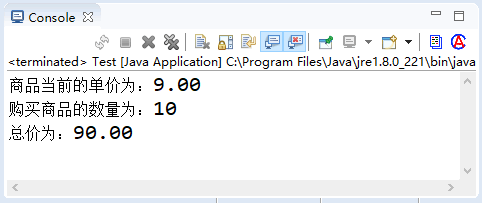

首页 > Java教程 > Java程序设计基础
Java赋值运算符（=）
赋值运算符是指为变量或常量指定数值的符号。赋值运算符的符号为“=”，它是双目运算符，左边的操作数必须是变量，不能是常量或表达式。
其语法格式如下所示：
赋值运算符的优先级低于算术运算符，结合方向是自右向左；不是数学中的等号，它表示一个动作，即将其右侧的值送到左侧的变量中（左侧只允许是变量，不能是表达式或其他形式）；不要将赋值运算符与相等运算符“==”混淆。
赋值运算符与其他运算符一起使用，可以表达多种赋值运算的变异效果。例如，在基本的赋值运算符的基础之上，可以结合算术运算符，以及后面要学习的位运算符，组合成复合的赋值运算符。赋值运算符和算数运算符组成的复合赋值运算的含义及其使用实例如表 1 所示。
在大型程序中，灵活运用这些赋值运算符可以提高程序的易读性，并且使程序更加容易保护。下面是一些使用赋值运算符的示例。
实现代码如下：
注意：虽然 Java 支持这种一次为多个变量赋值的写法，但这种写导致程序的可读性降低，因此不推荐这样写。
在该程序中，表示商品单价的 price 变量值为 10.25，而现在降了 1.25，在原来的基础上减去 1.25 即可获取现在的单价。而原来购买的数量为两个，现在需要购买 10 个，可以使用“count*=5”将数量乘以 5 倍之后的值赋值给 count 本身。
赋值运算符还用于将表达式的值赋给变量，如下代码是正确的。
其语法格式如下所示：
变量名称=表达式内容在 Java 语言中，“变量名称”和“表达式”内容的类型必须匹配，如果类型不匹配则需要自动转化为对应的类型。
赋值运算符的优先级低于算术运算符，结合方向是自右向左；不是数学中的等号，它表示一个动作，即将其右侧的值送到左侧的变量中（左侧只允许是变量，不能是表达式或其他形式）；不要将赋值运算符与相等运算符“==”混淆。
赋值运算符与其他运算符一起使用，可以表达多种赋值运算的变异效果。例如，在基本的赋值运算符的基础之上，可以结合算术运算符，以及后面要学习的位运算符，组合成复合的赋值运算符。赋值运算符和算数运算符组成的复合赋值运算的含义及其使用实例如表 1 所示。
| 运算符 | 含义 | 实例 | 结果 |
|---|---|---|---|
| += | 将该运算符左边的数值加上右边的数值， 其结果赋值给左边变量本身 | int a=5; a+=2; | a=7 |
| -= | 将该运算符左边的数值减去右边的数值， 其结果赋值给左边变量本身 | int a=5; a-=2; | a=3 |
| *= | 将该运算符左边的数值乘以右边的数值， 其结果赋值给左边变量本身 | int a=5; a*=2; | a=10 |
| /= | 将该运算符左边的数值整除右边的数值， 其结果赋值给左边变量本身 | int a=5; a/=2; | a=2 |
| %= | 将该运算符左边的数值除以右边的数值后取余，其结果赋值给左边变量本身 | int a=5; a%=2; | a=1 |
在大型程序中，灵活运用这些赋值运算符可以提高程序的易读性，并且使程序更加容易保护。下面是一些使用赋值运算符的示例。
int x, y, z; // 定义3个整型的变量 x = y = z = 5; // 为变量赋初值为5 x += 10; // 等价于x=x+10，结果x=15 y -= 3; // 等价于y=y-3，结果y=2 z *= 5; // 等价于z=z*5，结果z=25 x /= 4; // 等价于x=x/4，结果x=3 z %= x; // 等价于z=z%x，结果z=1
例 1
例如，一件商品的单价从 10.25 元降了 1.25 元，而自己购买的数量由原来的两个增加到 10 个，可以使用复合赋值运算符来计算购买商品的总价。实现代码如下：
public static void main(String[] args) {
double price = 10.25; // 定义商品的单价，赋值为10.25
double total = 0; // 定义总价初始为0
int count = 2; // 定义购买数量，赋值为2
price -= 1.25; // 减去降价得到当前单价
count *= 5; // 现在需要购买10个，即原来数量的5倍
total = price * count; // 总价=当前单价*数量
System.out.printf("商品当前的单价为：%4.2f \n", price); // 输出当前单价
System.out.printf("购买商品的数量为：%d \n", count); // 输出购买数量
System.out.printf("总价为：%4.2f \n", total); // 输出总价
}
保存代码并运行，输出的结果如下：

图 1 运行结果
图 1 运行结果
注意：虽然 Java 支持这种一次为多个变量赋值的写法，但这种写导致程序的可读性降低，因此不推荐这样写。
在该程序中，表示商品单价的 price 变量值为 10.25，而现在降了 1.25，在原来的基础上减去 1.25 即可获取现在的单价。而原来购买的数量为两个，现在需要购买 10 个，可以使用“count*=5”将数量乘以 5 倍之后的值赋值给 count 本身。
赋值运算符还用于将表达式的值赋给变量，如下代码是正确的。
double d1 = 12.34
double d2 = d1 + 5; // 将表达式的值赋给d2
System.out.println(d2); // 输出 d2 的值，将输出 17.34
关注公众号「站长严长生」，在手机上阅读所有教程，随时随地都能学习。内含一款搜索神器，免费下载全网书籍和视频。

微信扫码关注公众号